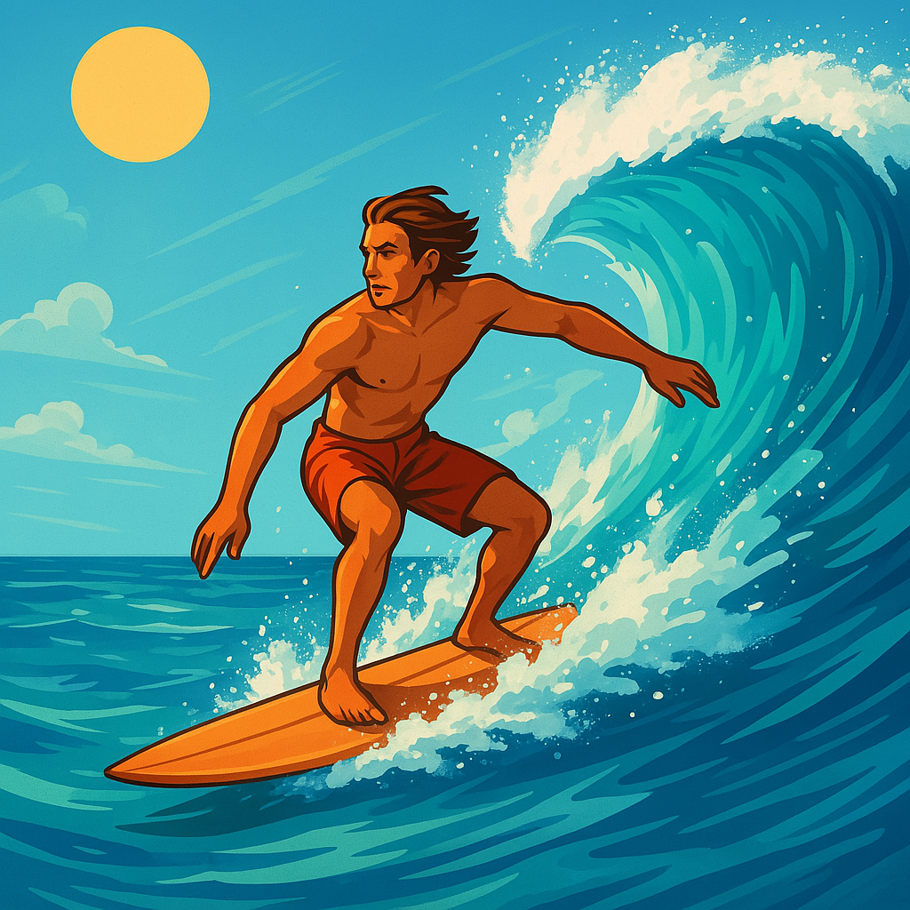

Prompt 1: When was America discovered? Give me the response as plain text without images.
America was discovered by European explorers in 1492 when Christopher Columbus, sailing under the Spanish flag, reached the Caribbean islands. However, indigenous peoples had lived in the Americas for thousands of years before Columbus arrived. The Vikings, led by Leif Erikson, are believed to have reached parts of North America around the year 1000, but their settlements were not permanent.
Prompt 2: Describe the role of a router in a computer network and how it manages data traffic. Give me the response as plain text without images.
A router is a crucial device in a computer network that directs data traffic between different networks. It connects multiple devices to the internet by forwarding data packets to their intended destinations. Routers analyze network addresses and determine the best path for data to travel, ensuring efficient communication between devices. Routers use routing tables and protocols to manage traffic, preventing congestion and optimizing speed. They also provide security features such as firewall protection and network address translation (NAT), which help safeguard connected devices from external threats. Overall, routers play a vital role in maintaining a stable and secure network environment. .
Prompt 3: Can you tell me what the most popular or commonly eaten foods in Italy are? Give me the response as plain text without images.
Italy is famous for its rich culinary traditions, and some of the most popular and commonly eaten foods include:
- Pizza: A national symbol, originally from Naples, with variations like Margherita and Marinara.
- Pasta: A staple food with countless varieties, including spaghetti, penne, and tagliatelle, often served with sauces like carbonara, amatriciana, and pesto.
- Risotto: A creamy rice dish, especially popular in northern Italy, with variations like risotto alla Milanese.
- Lasagne: Layers of pasta, béchamel sauce, and ragù, originating from Bologna.
- Gnocchi: Small potato dumplings, often served with tomato sauce, pesto, or butter and sage.
- Arancini: Sicilian rice balls stuffed with ragù, cheese, and peas, then deep-fried.
- Focaccia: A flatbread from Liguria, often topped with olive oil, rosemary, or other ingredients.
- Prosciutto: Dry-cured ham, particularly Prosciutto di Parma, enjoyed as an appetizer or in sandwiches.
- Parmigiano Reggiano: A hard, aged cheese from northern Italy, used in many dishes.
- Gelato: Italian-style ice cream, known for its creamy texture and intense flavors.
- Tiramisu: A famous dessert made with layers of coffee-soaked biscuits, mascarpone cheese, and cocoa.
- Ribollita: A Tuscan soup made with bread, beans, and vegetables.
- Polenta: A cornmeal-based dish, often served with meats or cheeses.
- Pesto alla Genovese: A basil-based sauce from Liguria, made with pine nuts, garlic, Parmesan, and olive oil.
- Cannoli: Sicilian pastries filled with sweet ricotta cheese.
These dishes represent the diversity and richness of Italian cuisine, with each region offering its own specialties and variations. Buon appetito!
Prompt 4: What is 20 percent of 2025? Give me the response as plain text without formulas or images.
20 percent of 2025 is 405.
Prompt 5: Write a "Hello, World!" program in C. Give me the response as plain text without images
Sure! Here is a simple "Hello, World!" program in C:
#include <stdio.h>
int main() {
printf("Hello, World!\n");
return 0;
}
This program:
This program includes the standard input-output library <stdio.h>,
defines the main function, and uses printf to print
"Hello, World!" to the console. The \n ensures the output
moves to a new line after printing. Happy coding!
Prompt 6: What cultural events are happening this month in Naples and Tokyo? Give me the response as plain text without images.
Certainly! Here are some cultural events happening in Naples and Tokyo in June 2025:
Naples
- Echoes of Naples: A Theatrical Tribute – A series of performances celebrating Naples' rich history and legends, featuring dramatic storytelling and traditional music.
- UNESCO Naples Conference – A gathering focused on cultural heritage preservation, engaging young professionals in discussions about safeguarding traditions.
- Naples Pride Fest – A vibrant celebration of LGBTQ+ rights with parades, performances, and community events.
- Napoli Film Festival – A showcase of independent films, particularly highlighting Mediterranean and Neapolitan filmmakers.
- Pompeii Theatrum Mundi – A theatrical festival set in the ancient ruins of Pompeii, featuring performances inspired by historical themes.
- Feast of the Gigli of Nola – A traditional festival with processions, music, and towering wooden structures carried through the streets.
- Andrea Bocelli Concert in Pompeii – A special performance by the renowned tenor in a historic setting.
Tokyo
- Torigoe Festival – A Shinto festival featuring the largest portable shrine in Tokyo, with lively processions and illuminated lanterns.
- Hydrangea Festivals – Various locations across Tokyo celebrate the blooming of hydrangeas, including Hakusan Shrine and Kamakura Hasedera Temple.
- Tsukiji Lion Dance Festival – A unique event featuring giant lion heads carried alongside portable shrines.
- Firefly Festivals – Special events where visitors can witness glowing fireflies in natural settings.
- Candle Night for 1 Million People – A peaceful event where Tokyo Tower and surrounding buildings turn off their lights, replaced by thousands of candles.
- Vietnam Festival – A cultural exchange event featuring Vietnamese cuisine, performances, and traditional crafts.
- Tokyo Pride – A major LGBTQ+ event with parades and festivities in Yoyogi Park.
- Oku Asakusa Bon Odori Festival – A traditional dance festival where participants form circles around a decorated scaffold.
These events offer a mix of tradition, art, and celebration, making June an exciting month in both cities.
Prompt 7: Write an abstract for a research paper that proposes an innovative technique for network traffic classification. The abstract should clearly describe the problem, the proposed solution, and its advantages over existing methods. Give me the response as plain text without images.
Abstract: Accurate network traffic classification is essential for optimizing network management, enhancing security, and ensuring efficient resource allocation. Traditional classification methods rely on port-based and deep packet inspection techniques, which struggle to handle encrypted and dynamically changing traffic patterns. This paper proposes an innovative approach utilizing deep learning-based feature extraction combined with adaptive clustering to classify network traffic efficiently and accurately. By leveraging neural networks to identify hidden patterns in flow characteristics, our technique surpasses conventional methods in robustness against encryption and real-time adaptability. Comparative analysis demonstrates that our model achieves higher classification accuracy while requiring less manual intervention and computational overhead. The proposed solution offers significant improvements for network operators, security analysts, and researchers seeking scalable and intelligent traffic classification frameworks.
Prompt 8: Translate the following text into Italian: When I was little, our family traveled to Madagascar, and it was an unforgettable experience. We saw lemurs in the trees, chameleons camouflaged among the leaves, and giant baobabs towering over the landscape. We went on a guided walk in the afternoon heat, and many animals were resting in the shade. Back home in rural Ireland, the view is completely different — we’re used to seeing sheep, cows, and chickens outside our window.
Quando ero piccolo, la nostra famiglia ha viaggiato in Madagascar ed è stata un'esperienza indimenticabile. Abbiamo visto lemuri sugli alberi, camaleonti mimetizzati tra le foglie e giganteschi baobab che svettavano sul paesaggio. Abbiamo fatto una passeggiata guidata nel caldo pomeridiano, e molti animali riposavano all'ombra. Tornati a casa, nella campagna irlandese, la vista è completamente diversa — siamo abituati a vedere pecore, mucche e galline fuori dalla finestra.
Prompt 9: Summarize the following text in exactly two sentences: Last month, at a lab in Santa Barbara, Calif., a team of Google researchers reached a milestone that some compared to the first flight at Kitty Hawk. They reached “quantum supremacy,” building a quantum computer that needed only 3 minutes 20 seconds to perform a calculation that today’s computers couldn’t finish in 10,000 years. It was one of the most interesting — and perhaps one of the most important — technological developments of the year. The trouble is that no one can really explain what it is that Google built, at least not in a way that mere mortals can understand. The first thing you need to know is that a quantum computer is experimental technology. It won’t be ready for prime time for several more years, if not more. But experts believe it will eventually make today’s computers look like toys, handling tasks that would never be possible with traditional machines. It will do this by harnessing the power of quantum mechanics, which is the strange behavior exhibited by things like electrons or particles of light or exotic metals cooled to several hundred degrees below zero. Describing this strange behavior is difficult, because it is unlike anything any of us have ever experienced. If any of us actually looked at the fundamental building block of a quantum computer, called a qubit, it would cease to be a qubit.
Google researchers achieved "quantum supremacy" by developing a quantum computer that completed a complex calculation in just over three minutes, something traditional computers would take 10,000 years to solve. While this breakthrough demonstrates the immense potential of quantum computing, the technology remains experimental and difficult to explain, relying on the strange principles of quantum mechanics.
Prompt 10: Give me an illustration of a person surfing on a wave in the ocean. The scene should show a sunny sky, blue water, and the surfer riding a wave with balance and energy.
Here's your illustration of a person surfing on a wave in the ocean, with a bright sunny sky and energetic movement—hope you like it! 🌊🏄♂️
